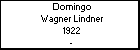
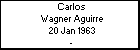

l i n k s
Children with:
María Andrea Dominguez
Siblings:
Osvaldo Wagner Aguirre
María Rosa Wagner Aguirre
Edith Wagner Aguirre
Raquel Wagner Aguirre
Alicia Wagner Aguirre
Hector Wagner Aguirre
Julio Wagner Aguirre
Children:
Bruno Wagner Dominguez
Carlos Wagner Aguirre
Born: 20 Jan 1963
Married to
María Andrea Dominguez
Generated by
GenDesigner 2.0 beta 3.6